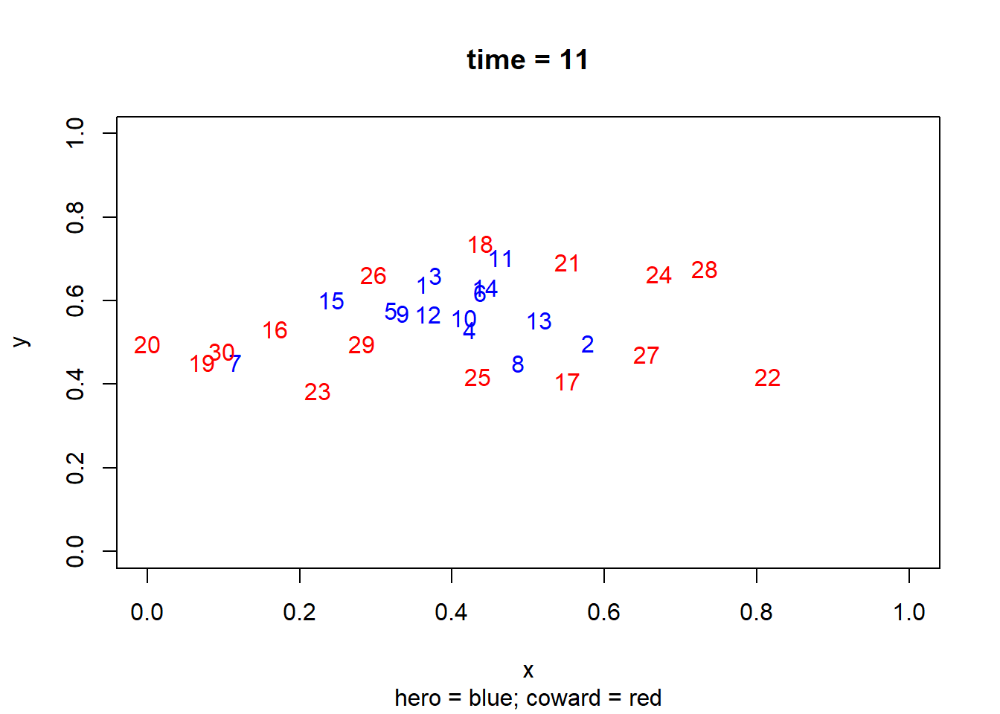
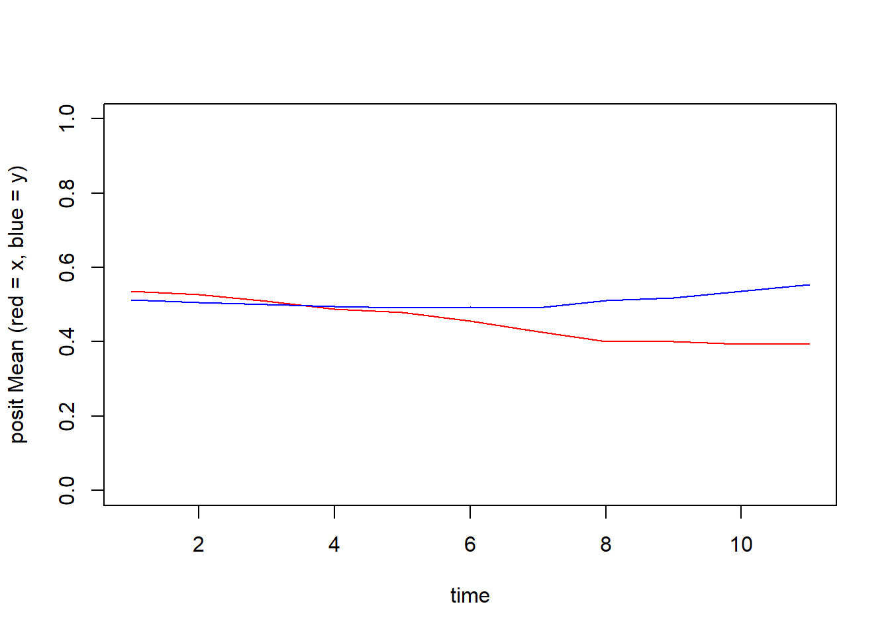
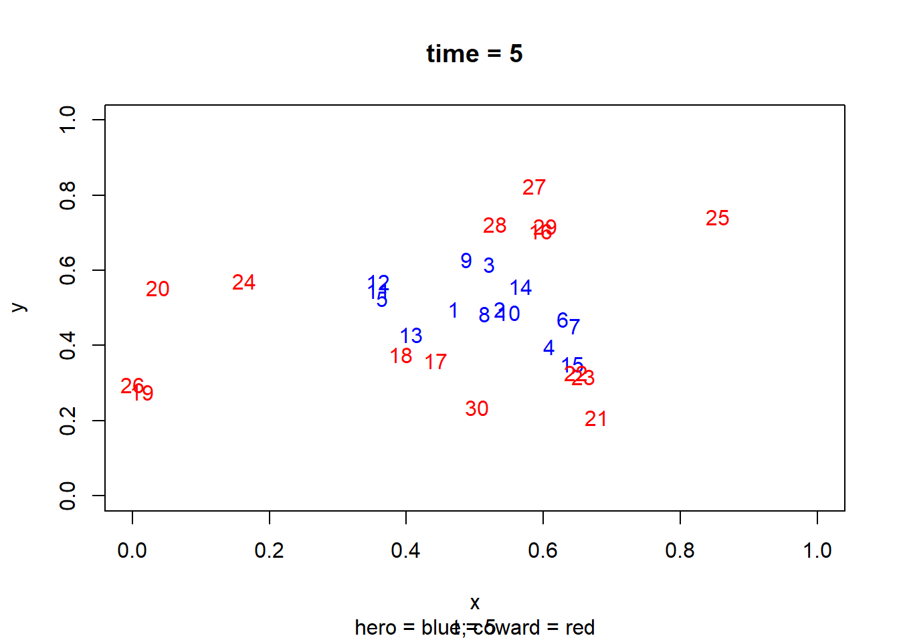

library(rABM)モデルライブラリの使い方
はじめに
rABMには、ABMに関する代表的なモデルを実装したモデル・ライブラリがいくつか用意されています。これらのモデルは、rABMの機能を確かめたり、簡単な実験を行ったり、独自の修正を加えて新たなオリジナルモデルを作成するためのテンプレートとして利用することができます。
これらのモデルは model_XXXX という名称で統一されているため、簡単に検索することができます。本章では、NetLogoで有名な Heros and Cowards をrABMに移植したモデルを例に、モデルライブラリの実行方法と、rABMの基本的な機能を概観します。
Heros and Cowardsモデル
モデルの概要
このモデルには3つのタイプのエージェントがおり、タイプ（agent_type）ごとに行動が変わります。
英雄 hero（type = 1)：味方と敵の間に割って入るように行動する（具体的には敵と味方の中間点を目標地点とする）
臆病者 coward（type = 0)：敵に対して味方の後ろにから身を隠すように行動する（具体的には敵と味方の中間地点を味方の方向に折り返した地点を目標点とする）
変わり者 mixed（type = 9）：毎回の更新ごとに英雄と臆病者のいずれかの行動パターンにランダムに変化する。
なおそれぞれのエージェントが他のどのエージェントをそれぞれ「友人」「敵」とみなすかは、モデルのセットアップ時点でランダムに定められます。たとえば、たとえば、エージェント1にとっての味方はエージェント3、敵はエージェント6といった具合です。
ユーザーが主に設定できるパラメーターは以下の通りです。
エージェントの数（n)
各エージェントの動きの速度（speed)
エージェントが動きまわる空間の最大値（x_max & y_max）
シミュレーションの長さ（sim_time）
このように、きわめて単純なシミュレーションでありながら毎回ランダムに設定される初期値ごとに、エージェントが極めて多様な動きをすることがから、複雑系シミュレーションを体験するためのよい教材として知られています。
モデルを回す
はじめにrABMを読み込みます。
それでは実際にモデルを回してみましょう。シミュレーションの長さ以外は、いったんデフォルトの値のままモデルを回してみたいと思います。なおヘルプファイルを確認していただければ明らかですが（?model_hero_cowardとコンソールでタイプする）、デフォルト値は以下の通りです。
エージェント数（n)：30
速度（speed)：0.1
X軸の境界値（x_max)：1
y軸の境界値（y_max)：1
シミュレーションの長さ（sim_time）: 300
なお、それ以外の以下の設定はデフォルトでは自動的に定められます（カッコ内は引数を示します）。後で説明するように、ユーザーはこれらの値も任意で設定することができます。
エージェントのタイプ（agent_type)：英雄と臆病者の割合が半々
エージェントの初期の位置（init_posit）：0以上、X軸・Y軸それぞれの最大値以内の範囲でランダムに配置
それぞれのエージェントにとっての味方と敵（relationship）：初期にランダムに設定
シード値（seed）：ランダム変数のシード値
実際にモデルを回してみます。
G2 <- model_hero_coward(sim_time = 10)このように、モデル・ライブラリではデフォルト設定のままでもモデルが実行できるよう設計されています。まずは動作を確認し、その後でパラメーターを変更して挙動を観察するのが基本的な使い方です。
結果を確認する
モデル・ライブラリの出力は、通常2つのGameオブジェクトを含むリストです。$G_initはシミュレーションを回す前、$G_finishedは実行後の状態を示します。
ここでは、実行後のオブジェクトを G としてコピーし、中身を確認します。
G <- copy_obj(G2$G_finished)結果の確認では、まずオブジェクトを表示し、利用可能な plot_FUN と summary_FUN を確認するのが有効です（出力省略）
Gこのモデルでは、
plot_FUN：plot_spce, plot_relationship
summary_FUN：trace_posit_mean, trace_posit_sd
が用意されています。
まず、現在のエージェント位置を可視化してみます。
G$plot_space()
またエージェント間の平均距離がどのように変化してきたのかをtrace_posit_meanで見てみましょう。
posit_mean <- G$trace_posit_mean()
なお、今回呼び出したsummary_FUNには、プロットだけではなく、何らかのオブジェクトの出力を伴うように設定することが想定されています。この出力結果は、その後のさらなる分析に使用することができます。今回の場合、出力を付加したposit_meanには、各時点におけるエージェントの位置の中間地点の記録されています。
posit_mean x y
t1 0.4350399 0.5674030
t2 0.4481487 0.5724032
t3 0.4600889 0.5804754
t4 0.4712360 0.5753844
t5 0.4821545 0.5878446
t6 0.4971226 0.5976850
t7 0.4955286 0.5881881
t8 0.4891646 0.5864962
t9 0.4804174 0.5701470
t10 0.4704999 0.5455383
t11 0.4625521 0.5309776動画でプロットを見る
シミュレーション後のGameオブジェクトには、それぞれの時点におけるstate（および後の章で解説するactive state）フィールドの結果が、$logの下にネストされる形で保存されています。各時点のstateをプロットしたい場合には、下記のようにnameにplot_FUNの名前、logに見たい時点を指定することで呼び出せます。
plot(G, name = "plot_space", log = 5)printing: 1/1
けれども、これらを一つ一つ確認するのは大変です。そこで、プロットをGIFファイルとして出力し動画としてみることが考えられます。ここではgifskiというパッケージの関数を内部で用いますので、まだ手元のRにインストールされていない場合には、下記の手順で先にインストールしてください。
install.packages("gifski")動画を作成するには、animate_log関数を用います。なお、各画像の表示の速度はdelayパラメーターで調整します。また、出力されたGIFファイルは、デフォルトでは、temp.gifという名前でディレクトリに保存されますが、file引数で変更できます。
animate_log(G = G, name = "plot_space", delay = 0.3)設定を変える
ここまで読んだユーザーの方は、さまざまなほかの設定を試してみたくなることでしょう。たとえば、エージェントのタイプの割合を変えたらどうなるのだろうか、シード値を変えてみたら、関係を任意のものに変えてみたならば・・・などなど。
前述の通り、これらの値は引数で変えることができます。ただしモデルで想定されている投入値の形式とずれてしまわないように、いったん出力されたモデルで、操作したいフィールドの値がどのようになっているのかを確認することをお勧めします。たとえば、エージェントのタイプに関しては、現状のモデルではこのようになっています。
G$agent_type 1 2 3 4 5 6 7 8 9 10 11 12 13 14 15 16 17 18 19 20 21 22 23 24 25 26
1 1 1 1 1 1 1 1 1 1 1 1 1 1 1 0 0 0 0 0 0 0 0 0 0 0
27 28 29 30
0 0 0 0 したがって、エージェントのタイプを任意のものに変えたい場合には、1と0の数を変えればよいことが分かります。以下では、英雄の数を20、臆病者の数を10に変更してみます。
agent_type_new <- c(rep(1, 20), rep(0, 10))そのうえで、この新たなタイプの割合でシミュレーションを回してみましょう。
G3 <- model_hero_coward(n = 30,
agent_type = agent_type_new,
sim_time = 10)あとはここまで見たように、シミュレーションの結果がどのように変わるのかを観察してみてください。
補遺：mixedタイプを加える
前述の通り、このモデルでは特殊なタイプとして変わり者 （=9）を加えることができます。その設定の方法は以下の例のようになります。ここでは、英雄、臆病者、変わり者を1/3ずつ設定しました。
# mixedタイプを設定
agent_type_mixed <- c(rep(1, 10), rep(0, 10), rep(9, 10))
# モデルに組み込む
G4 <- model_hero_coward(n = 30,
agent_type = agent_type_mixed,
sim_time = 10)